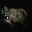
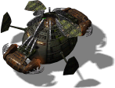
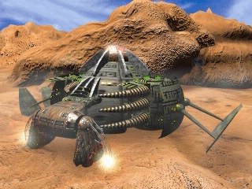

Mother ship



In-game info panel
- Speed:
- 80 km/h?
- Energy (HP):
- 3000
- Sight range:
- 600 m
Description
The mother ship, from whose womb all life on a planet starts. Without her guiding hand, our efforts are handicapped. She is capable of storing and transporting small amounts of raw materials as well as housing a number of people, though more when she is at rest than in flight. She can generate a small amount of power and is capable of moving on and between planets. Losing the mother ship would ultimately lead to our destruction, as we would lose the ability to conquer new planets. The mother ship must be fully operational to take off.
Related
- Equivalent of the other side
- Mother
Config values not shown in game (5)
TURN_SPEED- 0.01
AIUNIT- AIUNIT_UNKNOWN
SOLDIER_TYPE- SOLDIERTYPE_UNKNOWN
INDEPENDENT- nigdy
TYPE- R_aHELIKOPTERmatka